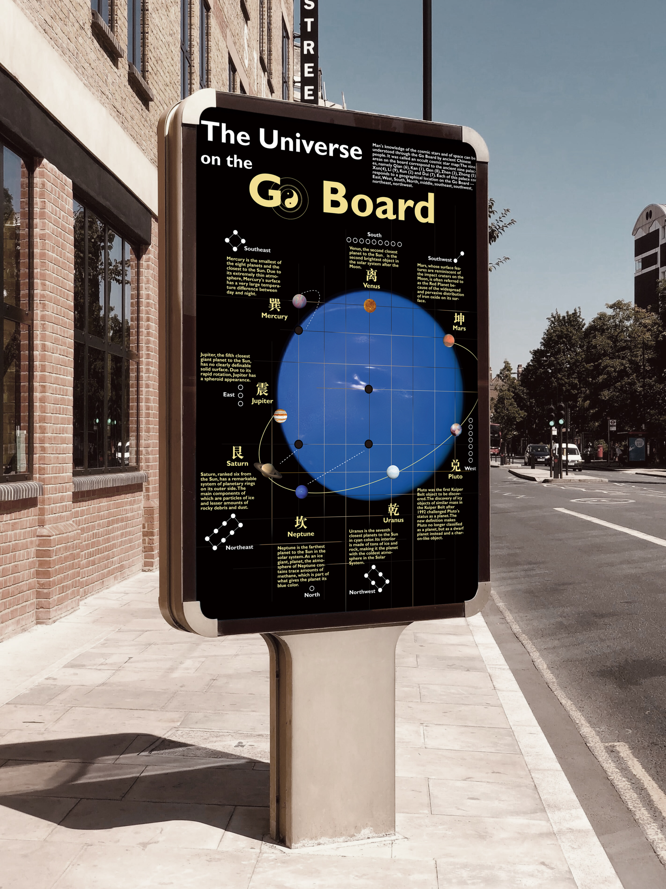

Skymap - The Universe on the Go Board
This project is inspired by the philosophical and cosmological ideas embedded in the traditional Chinese game of Go (Weiqi). In ancient Chinese thought, the Go board was often interpreted as a symbolic map of the universe: the four corners represent the boundaries of heaven and earth, while the black and white stones embody the balance of yin and yang. The central point of the board, known as Tianyuan, corresponds to the position of the North Star in ancient astronomy, surrounded by eight other “stars,” reflecting the structure of the celestial system and the concept of the Nine Heavens and Nine Palaces in traditional Chinese cosmology.
Building on this conceptual framework, the project translates the spatial logic of the Go board into a contemporary visual system. The interaction between black and white stones—repulsion between similar forces and attraction between opposites—serves as a metaphor for the movement and balance of energy within the universe. Through visual mapping and graphic reinterpretation, the work explores how ancient cosmological structures can inform modern design language, transforming the Go board into a contemporary “cosmic map” that connects traditional philosophy with visual communication.

Main visual of the Skymap project.

Expanded project presentation view in different application context.

Expanded project presentation view in different format.